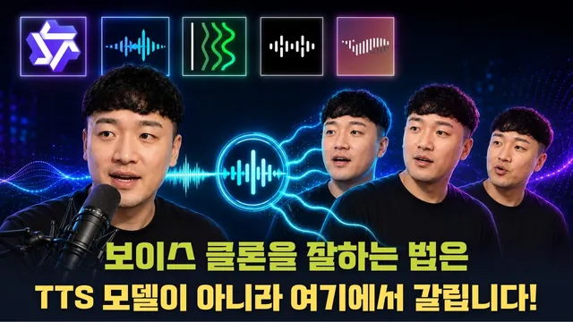

보이스클론을 잘하는 오픈소스 TTS 모델 5가지 비교 분석! (일관성 있는 음성을 생성하기 위한 꿀팁까지!)

원본 영상 보기 →
- 모델 선택보다 입력 데이터 설계가 먼저예요
- 유사도 숫자는 의사결정 기준이 아니에요
- 자기 복제 자동화는 두 가지 결정으로 좁혀집니다
한 줄 요약
콘텐츠 자동화용 보이스 클론을 무료로 하고 싶은 분을 위해, 오픈소스 TTS 다섯 개(Qwen 3 TTS·VoxCPM 2·XTTS 3·Audio8·Fish Audio S2)로 발표자 본인 목소리를 직접 클론해 비교했어요. 결론은 모델보다 참조 음성 데이터가 결과를 좌우한다는 겁니다.
전체 내용 정리
왜 오픈소스로 눈을 돌릴까요
콘텐츠 자동화를 하다 보면 보이스 클론이 생각보다 까다롭습니다.
내 목소리와 비슷하게는 나오는데, 생성된 문장을 들어 보면 발음이나 음색이 미묘하게 어색해서 그대로 쓰기 불편해요. 그렇다고 ElevenLabs 같은 유료 서비스를 계속 쓰면 반복 생성할수록 비용이 커지고요.
그래서 이번에는 무료 오픈소스 모델 다섯 개를 골라 발표자 본인 목소리로 클론 테스트를 진행했습니다. 참조 음성을 어떻게 넣어야 결과가 좋아지는지, 어떤 음성 데이터를 준비해야 하는지에 초점을 맞춰요.
용어부터 정리할게요
프리셋은 오픈소스 TTS 모델에 기본 내장된 성우를 뜻합니다. 녹음실에 대기 중인 성우 중 한 명을 고르는 것과 같아요.
보이스 디자인은 얼굴 없는 AI 인플루언서를 만들 때 쓰는 방식입니다. 특정 느낌과 조건을 부여해 실제 인물과 다른 새로운 음성을 만들어 내요.
제로샷 보이스 클로닝은 내 실제 음성을 짧게 들려준 뒤 별도 훈련 없이 같은 사람처럼 새 문장을 말하게 하는, 가장 기초적인 클론 방식입니다. 본인 업무를 대체하거나 자신을 복제하려는 목적이라면 대부분 이 방식으로 입문하게 돼요.
상용 서비스는 두 갈래예요
Fish Audio는 로그인 없이 5초 정도 음성만 넣어도 간단히 복제해 주고, 결제 후 3분 이상 녹음하면 더 나은 클론을 만들 수 있습니다.
ElevenLabs는 짧은 오디오만 넣는 인스턴트 보이스 클론(IVC)과, 플랜을 올린 뒤 최소 5분 이상 녹음해 만드는 프로페셔널 보이스 클론(PVC)으로 나뉘어요.
발표자는 과거 ElevenLabs로 8시간 분량 음성을 만들어 실제 음성을 복제하고 서비스를 운영한 경험이 있습니다. 브랜드나 정체성에 치명적인 손상이 가면 안 되는 경우라면 처음에는 ElevenLabs에 돈을 내고 쓰는 것을 개인적으로 추천해요.
오픈소스 클론 방식 세 가지
스피커 임베딩, 인컨텍스트 러닝(ICL), 파인튜닝 세 가지입니다.
파인튜닝은 추천하지 않아요. VRAM 24GB 정도의 좋은 GPU와 최소 두세 시간 분량의 학습 음성이 필요하고, 한국어를 로컬에서 돌리는 난이도가 높거든요.
대신 인컨텍스트 러닝을 추천합니다. 방법도 간단해요. 오픈소스 모델과 Claude Code나 Codex를 준비한 뒤 "이 음성 파일이랑 음성 대본으로 ICL 방식으로 보이스 클론 해 줘"라고 시키면 다 해 줍니다. 사전에 준비할 건 음성 데이터를 잘라 주고 전처리하는 FFmpeg 정도예요.
입력 세 가지의 조합이 결과를 만들어요
TTS 모델 자체는 내 목소리를 들어 본 적이 없습니다. 그래서 세 가지가 맞물려야 해요.
- 참조 음성 — 내 목소리
- 참조 대본 — 그 음성이 읽고 있는 텍스트
- 새 문장 — 자동화에서 실제로 말하게 할 내용
이 세 개가 입력으로 들어가 클론된 음성이 출력됩니다.
참고로 파인튜닝(LoRA) 방식을 지원하는 오픈소스는 많지 않아요. 그중에서는 Qwen 계열(SFT)과 VoxCPM 2(LoRA)가 지원합니다. 발표자가 개인적으로 추천하는 파인튜닝 모델은 VoxCPM 2이며, 품질을 극한까지 끌어올리려면 본인 음성을 최소 3시간 확보한 뒤 이 모델로 만드는 걸 권해요.
가장 중요한 건 모델이 아니라 입력 데이터예요
참조로 넣는 원본 음성은 노이즈가 없고 마이크가 고정된, 최대한 일관성 있는 환경에서 녹음해야 합니다.
대본은 실제 발화와 정확히 일치해야 하고요. 그리고 자동화하려는 텍스트와 비슷한 워딩이 섞인 대본을 카테고리별로 여러 개 만들어 두면 그에 맞춰 답변 품질이 올라갑니다. 추론 단계에서 모델이 내뱉는 워딩과 참조 워딩이 유사할수록 더 정확하게 발화하거든요.
실용적인 팁이 있어요. 평소 말투와 숫자 정도를 섞은 대본을 따로 만들어 두고, 분노나 슬픔 같은 감정 연기는 별도로 녹음해서 자동화할 때 감정 카테고리에 따라 분기하는 로직을 만들면 더 효과적입니다.
다섯 개 모델 비교
발표자는 과거 유튜브 영상에서 자른 18초 음성과 3분(180초)짜리 원본 음성을 참조로 써서 다섯 모델을 비교했어요(프리셋 TTS인 Supertonic은 제외).
먼저 방식 비교. 스피커 임베딩 방식은 인컨텍스트 러닝보다 유사도가 떨어졌습니다. 그래서 모든 경우에 참조 대본과 참조 음성을 결합한 ICL 방식을 권해요.
유사도는 Microsoft 음성 임베딩 모델로 코사인 유사도를 계산했지만, 이 숫자는 참고용일 뿐 절대적으로 믿지 말고 정성적으로 판단하라고 강조합니다.
VoxCPM 2는 레퍼런스 모드와 이어 말하기 모드가 있는데, 레퍼런스 모드가 음색과 음역대 면에서 더 비슷했어요. 편집된 18초 음성은 무음 제거 탓에 말 빠르기가 반영돼 이어 말하기 모드에서 더 두드러졌고요.
18초 대 180초 비교에서는 긴 음성 쪽이 훨씬 듣기 편하고 본인 목소리와 가까웠습니다. XTTS 3는 천천히 말하는 경향이 있지만 빠른 참조 음성에도 안정적으로 발화했어요.
Audio8은 탈락, Fish Audio S2 Pro가 원픽
Audio8은 컨텍스트 길이가 짧아 긴 음성이 들어오면 문장이 무너지고 알아들을 수 없는 소리가 났습니다. 18초 기준으로도 음색만 비슷할 뿐 발음이 뭉개져서, 30초로 조금 길게 넣어도 나아지지 않아 탈락시켰어요.
최종 순위는 이렇습니다.
| 순위 | 모델 | |---|---| | 1위 | Fish Audio S2 Pro | | 2위 | XTTS 3 | | 3위 | Qwen 3 TTS | | 4위 | VoxCPM 2 |
Fish Audio S2 Pro는 XTTS 3만큼 큰 사이즈 모델이고, S2 2.1은 API로만 제공되며 오픈소스로 풀리지 않았어요.
다만 단서를 답니다. 이 평가는 3분짜리 음성 기준일 뿐이고, 참조 음성이 바뀌면 순위도 달라질 수 있습니다. 참조 음성은 최대 3분 정도까지 권하고, 4~5분도 시도해 볼 수 있으나 GPU를 더 써요.
좋은 음성만 골라 다시 참조로 넣는 큐레이션 기법
일관성 있는 음성 데이터를 직접 확보하기 어려우니 쓸 수 있는 잡기술이 하나 있습니다.
AI가 생성한 음성들을 모아서 직접 들어 본 뒤 "이 음성이면 100점"이라고 판단되는 것만 골라, 그것을 다시 참조 오디오로 붙여 클론하는 거예요.
예를 들어 Fish Audio 음성이 마음에 들어서 10개를 만들었는데 그중 7개가 좋았다면, 그 7개만 엄선해 참조 오디오로 활용합니다. AI가 출력하는 클론 음성은 대부분 일관성이 있기 때문에, 이것을 입력으로 쓰면 꽤 안정적인 클론을 운영할 수 있어요.
LoRA 파인튜닝과 언어 제약
인컨텍스트 러닝이 마음에 안 들면 LoRA 파인튜닝으로 갈 수 있습니다. 발표자가 공유하는 자료에 GitHub 주소와 매뉴얼이 정리돼 있어요.
VoxCPM의 경우 2~3시간 분량 음성을 확보한 뒤 "LoRA 파인튜닝용 데이터셋으로 만들어 줘"라고 하면 데이터셋을 만들어 줍니다.
공식적으로는 영어와 중국어만 지원한다는 점이 단점이지만, 발표자는 다른 언어로도 워킹하는 걸 성공한 적이 있고, GitHub 이슈에서 외국 사용자들이 십수 시간짜리 음성 데이터를 모아 다른 언어로 LoRA 파인튜닝을 돌리는 사례를 본 적이 있다고 해요.
핵심 인사이트
- 모델 선택보다 입력 데이터 설계가 먼저예요: 다섯 개 모델을 다 돌려 봐도, 결과 편차의 대부분은 노이즈 없는 일관된 환경에서 녹음한 참조 음성과 실제 발화와 일치하는 대본에서 옵니다. 모델 비교에 시간을 쓰기 전에 녹음 환경부터 잡으세요.
- 유사도 숫자는 의사결정 기준이 아니에요: 코사인 유사도 같은 정량 지표는 참고용이고, 실제 판단은 여러 샘플을 귀로 듣고 정성적으로 해야 합니다. 숫자만 보고 모델을 고르면 실제로 듣기 불편한 음성을 선택하게 돼요.
- 자기 복제 자동화는 두 가지 결정으로 좁혀집니다: 어떤 환경에서 어떤 음성 데이터를 녹음할지, 그리고 그 음성을 어느 업무와 분야의 자동화에 투입할지. 기술 실행은 Claude Code나 Codex에 맡기면 되고, 사람이 정해야 하는 건 이 두 가지예요.
오늘 당장 해볼 것
- 조용하고 반향이 적은 방에서 마이크 위치를 고정하고 평소 말투로 3분 분량을 한 번에 녹음해 보세요. 중간에 자리를 옮기거나 마이크 거리를 바꾸지 마시고요. 녹음하면서 읽은 대본을 텍스트 파일로 그대로 저장해 참조 대본으로 쓰면 됩니다.
- 자동화에 쓸 문장체와 비슷한 워딩으로 대본을 한두 개 더 만들어, 카테고리별로 폴더를 나눠 각각 녹음해 두세요. 뉴스레터 낭독체나 안내 멘트체 같은 거요.
- "Fish Audio S2로 이 참조 음성과 대본을 써서 인컨텍스트 러닝 방식으로 이 문장을 읽어 줘"라고 지시해 샘플을 5~10개 뽑고, 그중 가장 자연스러운 것만 골라 다시 참조 오디오로 넣어 재생성해 보세요.